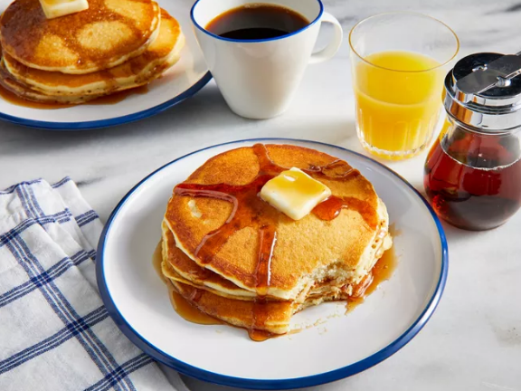

My-Hop Pancakes

Description
These delicious breakfast cakes are said to resemble those from a famous pancake house. When replacing milk for buttermilk, increase lemon juice to 1 1/2 tablespoons. Serve topped with butter.
Ingredients
- 1 1/4 cups buttermilk
- 1/4 cup vegetable oil
- 1/2 teaspoon vanilla extract
- 1/4 cup white sugar
- 1 1/4 cups all-purpose flour
- 1 1/2 teaspoons baking powder
- 1 teaspoon baking soda
- 1 dash salt
- 1 egg
- 1 teaspoon lemon juice
- 1 tablespoon butter, or as needed
Steps
- Gather all ingredients.
-
Mix buttermilk, vegetable oil, and vanilla in a bowl; stir in sugar.
Whisk in flour, baking powder, baking soda, and salt, combining the batter with just a few strokes to moisten.
Leave the lumps.
- Whisk egg and lemon juice together in a separate bowl;
gently stir into the batter. Refrigerate for at least
30 minutes, up to 1 hour.
- Heat a large skillet over medium heat and grease with the
butter. Pour 1/3 cup of batter per pancake into the skillet
and cook until bubbles appear on the surface, about 2 minutes.
- Flip with spatula and brown the other side, about 2 more minutes.
- Enjoy!
Return to Recipes